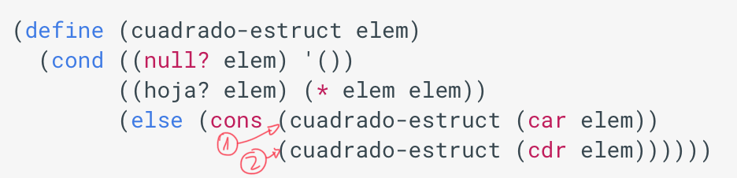
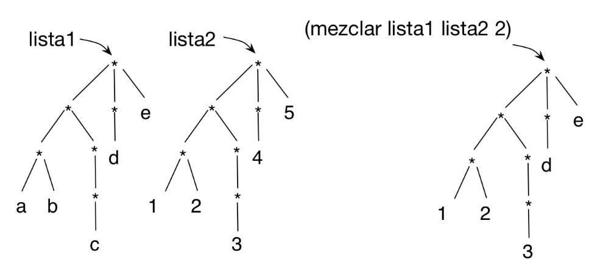

Práctica 6: Listas estructuradas¶
Entrega de la práctica¶
Para entregar la práctica debes subir a Moodle el fichero
practica06.rkt con una cabecera inicial con tu nombre y apellidos, y
las soluciones de cada ejercicio separadas por comentarios. Cada
solución debe incluir:
- La definición de las funciones que resuelven el ejercicio.
- Un conjunto de pruebas que comprueben su funcionamiento
utilizando el API
RackUnit.
Ejercicios¶
Ejercicio 1¶
a) Escribe la lista estructurada correspondiente a la siguiente
representación gráfica por niveles. Para comprobar si la has definido
correctamente puedes intentar obtener algunos de los elementos de la
lista, como mostramos en el check-equal? que hay a continuación.
*
/ | \
| | \
* d *
/ \ / / | \
a b c * * h
| / \
e f g
(define lista-a '(________))
(check-equal? (cadddr (caddr lista-a)) 'h)
b) Dibuja la representación en niveles de las siguientes listas estructurada
(define lista-b1 '((2 (3)) (4 2) ((2) 3)))
(define lista-b2 '((b) (c (a)) d (a)))
c) Dada la definición de cuadrado-estruct vista en teoría:

- Indica qué devuelve la expresión
(cuadrado-estruct lista-b1). La listalista-b1es la definida en el apartado anterior. - En la evaluación de la expresión anterior, indica cuáles son los
argumentos que se pasan por parámetro en las llamadas recursivas a
cuadrado-estructmarcadas con1y2. - En la evaluación de la expresión anterior, indican qué devuelven
las llamadas recursivas marcadas con
1y2.
d) Para entender el funcionamiento de las funciones de orden superior
que trabajan sobre listas estructuradas es muy importante entender qué
devuelve la expresión map que se aplica a la lista.
La siguiente función utiliza la función (nivel-hoja-fos dato lista)
vista en teoría. Indica qué devuelve la siguiente expresión. La lista
lista-b2 es la definida en el apartado anterior. Utiliza el dibujo
que has hecho en el ejercicio anterior para entender el funcionamiento
de la expresión.
(map (lambda (elem)
(nivel-hoja-fos 'a elem)) lista-b2)
Ejercicio 2¶
a) Implementa la función recursiva (cuenta-pares lista) que recibe una
lista estructurada y cuenta la cantidad de números pares que
contiene. Implementa dos versiones de la función, una con
recursión pura y otra con funciones de orden superior.
Ejemplos:
(cuenta-pares '(1 (2 3) 4 (5 6))) ; ⇒ 3
(cuenta-pares '(((1 2) 3 (4) 5) ((((6)))))) ; ⇒ 3
b) Implementa la función recursiva (todos-positivos lista) que
recibe una lista estructurada con números y comprueba si todos sus
elementos son positivos. Implementa dos versiones de la función, una con
recursión pura y otra con funciones de orden superior.
Ejemplos:
(todos-positivos-fos '(1 (2 (3 (-3))) 4)) ; ⇒ #f
(todos-positivos-fos '(1 (2 (3 (3))) 4)) ; ⇒ #t
Ejercicio 3¶
Implementa la función (cumplen-predicado pred lista) que devuelva
una lista con todos los elementos de lista estructurada que cumplen un
predicado. Implementa dos versiones, una recursiva pura y otra
usando funciones de orden superior.
Ejemplo:
(cumplen-predicado even? '(1 (2 (3 (4))) (5 6))) ; ⇒ (2 4 6)
(cumplen-predicado pair? '(((1 . 2) 3 (4 . 3) 5) 6)) ; ⇒ ((1 . 2) (4 . 3))
Utilizando la función anterior implementa las siguientes funciones:
- Función
(busca-mayores n lista-num)que recibe una lista estructurada con números y un númerony devuelve una lista plana con los números de la lista original mayores quen.
(busca-mayores 10 '(-1 (20 (10 12) (30 (25 (15)))))) ; ⇒ (20 12 30 25 15)
- Función
(empieza-por char lista-pal)que recibe una lista estructurada con símbolos y un carácterchary devuelve una lista plana con los símbolos de la lista original que comienzan por el carácterchar.
(empieza-por #\m '((hace (mucho tiempo)) (en) (una galaxia ((muy muy) lejana))))
; ⇒ (mucho muy muy)
Ejercicio 4¶
a) Implementa la función recursiva (sustituye-elem elem-old
elem-new lista) que recibe como argumentos una lista estructurada y dos
elementos, y devuelve otra lista con la misma estructura, pero en la
que se ha sustituido las ocurrencias de elem-old por elem-new.
Ejemplo:
(sustituye-elem 'c 'h '(a b (c d (e c)) c (f (c) g)))
; ⇒ (a b (h d (e h)) h (f (h) g))
b) Implementa la función recursiva (diff-listas l1 l2) que tome como
argumentos dos listas estructuradas con la misma estructura, pero con
diferentes elementos, y devuelva una lista de parejas que contenga los
elementos que son diferentes.
Ejemplos:
(diff-listas '(a (b ((c)) d e) f) '(1 (b ((2)) 3 4) f))
; ⇒ ((a . 1) (c . 2) (d . 3) (e . 4))
(diff-listas '((a b) c) '((a b) c))
; ⇒ ()
Ejercicio 5¶
Dos funciones sobre niveles:
a) Define la función recursiva (mezclar lista1 lista2 n) que reciba
dos listas estructuradas con la misma estructura y un número que
indica un nivel. Devuelve una nueva lista estructurada con la misma
estructura que las listas originales, con los elementos de lista1 que
tienen un nivel menor o igual que n y los elementos de lista2 que
tienen un nivel mayor que n.

(define lista1 '(((a b) ((c))) (d) e))
(define lista2 '(((1 2) ((3))) (4) 5))
(mezclar lista1 lista2 2) ; ⇒ (((1 2) ((3))) (d) e)
b) Implementa la función (nivel-elemento lista) que reciba una lista
estructurada y devuelva una pareja (elem . nivel), donde la parte
izquierda es el elemento que se encuentra a mayor nivel y la parte
derecha el nivel en el que se encuentra. Puedes definir alguna
función auxiliar si lo necesitas. Puedes hacerlo con
recursión o con funciones de orden superior.
(nivel-elemento '(2 (3))) ; ⇒ (3 . 2)
(nivel-elemento '((2) (3 (4)((((((5))) 6)) 7)) 8)) ; ⇒ (5 . 8)
Lenguajes y Paradigmas de Programación, curso 2020-21
© Departamento Ciencia de la Computación e Inteligencia Artificial, Universidad de Alicante
Domingo Gallardo, Cristina Pomares, Antonio Botía, Francisco Martínez